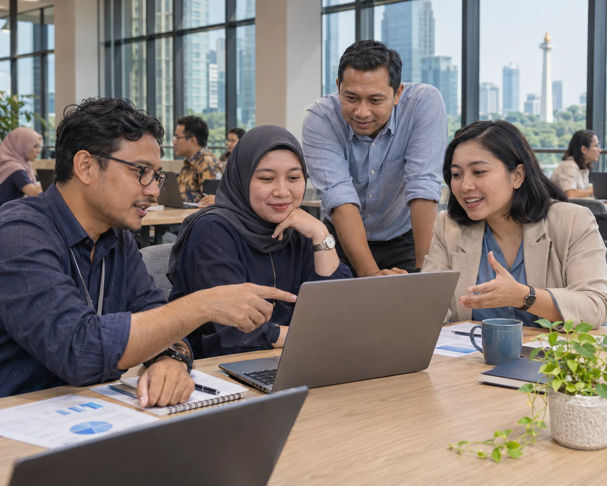

Siapkan data yang aman
Pakai dataset sintetis atau sumber publik yang disiapkan instruktur. Periksa kelengkapan, format, dan izin.
PELATIHAN BERBASIS KOMPETENSI
Kerjakan satu proyek AI dari data mentah hingga prototipe. Periksa hasilnya terhadap sumber, uji saat terjadi gangguan, dan dokumentasikan perbaikannya.

PROGRAM
Setiap peserta memilih kasus yang dekat dengan pekerjaannya. Semua peserta mengikuti satu jalur, dengan agenda, workbook, rubrik, dan standar bukti yang sama.
Lihat isi portofolioPakai dataset sintetis atau sumber publik yang disiapkan instruktur. Periksa kelengkapan, format, dan izin.
Hubungkan data, prompt, dan komponen AI. Pasang prototipe di lingkungan latihan dan uji fungsi dasarnya.
Cocokkan klaim dengan sumber, uji kondisi gagal, lalu simpan bukti sebelum dan sesudah perbaikan.
Coba briefing dokumen publik, FAQ, survei sintetis, atau bahan ajar untuk peserta berlatar Dosen Fakultas Dakwah dan Komunikasi.
AGENDA
Pelatihan terdiri dari 20% konsep dan demo, 70% praktik, dan 10% refleksi serta evaluasi. Peserta memilih satu kasus untuk audit data, lalu memakai sumber briefing yang sama untuk membandingkan hasil.
MATERI PRAKTIK
Ikuti empat tahap di setiap blok. Siapkan lembar kerja untuk mencatat hasil dari pengantar hingga demo.
Unduh lembar kerja ↓KOMPETENSI
Skema klaster Penerapan Artificial Intelligence (AI) Untuk Proses Data, SKEMA.14.01/AI/VII/2025.
Rancangan ini memetakan kegiatan pada tingkat unit. Elemen, Kriteria Unjuk Kerja (KUK), dan Materi Uji Kompetensi (MUK) perlu ditinjau oleh asesor dan Lembaga Sertifikasi Profesi (LSP). Kepmenaker 103/2026 mencabut Kepmenaker 123/2021. Penyelenggara perlu konfirmasi tertulis dari LSP tentang penggunaan skema pada tanggal asesmen.
HASIL KERJA
Simpan bukti di folder individual. Gunakan cuplikan data yang aman untuk tinjauan rekan.
Gunakan rubrik ini untuk umpan balik. Keputusan kompetensi resmi merupakan kewenangan asesor dan LSP.
| Dimensi | Belum memadai | Memadai | Kuat |
|---|
Gunakan cek pemahaman di setiap blok dan tinjauan antar peserta saat demo. Peserta menunjukkan sumber, satu kegagalan, perbaikan, dan hasil uji ulang atau status pengujian yang masih tertunda.
PERSIAPAN
Centang saat setiap persiapan selesai. Pilihan tersimpan di browser ini.
Pada hari pertama, mulai dengan contoh bersama. Bimbing peserta mengaudit CSV, membandingkan dua versi prompt, dan menunjukkan koreksi skor LY-003 beserta rujukannya.
Pada hari kedua, peserta memasang prototipe latihan, menjalankan T01, T03, dan T06, lalu menyimpan bukti perbaikan dan uji ulang. Bagikan skenario lain antarpasangan dan akhiri dengan demo berpasangan.
Empat CSV sintetis tersedia pada blok validasi. Aturan dan kamus data ada di prompt audit. Untuk blok selanjutnya, gunakan sumber briefing tervalidasi, konfigurasi, dan skenario yang ditautkan dekat prompt masing-masing.
Gunakan data sintetis atau sumber publik yang sah. Jika data terlarang terlanjur digunakan, hentikan praktik, batasi penyebaran, catat insiden tanpa menyalin isinya, laporkan ke penanggung jawab, dan ikuti prosedur penghapusan.
Unduh bahan sebelum kelas, termasuk contoh hasil uji luring. Peserta tetap mengaudit data, memeriksa klaim, menelaah prompt, dan merevisi rancangan. Tandai eksekusi AI langsung sebagai belum diobservasi.
Susun satu draf MUK dengan variasi kasus individual. Petakan butir ke elemen dan KUK resmi. Kumpulkan bukti lewat observasi, portofolio, simulasi, dan pertanyaan. Nilai tindakan dan jejak pemeriksaan peserta. Catat versi perubahan serta ajukan persetujuan LSP.
Isi penanda dalam kurung siku sesuai informasi yang tersedia.